--------点击蓝字关注我--------
--------点击蓝字关注我--------
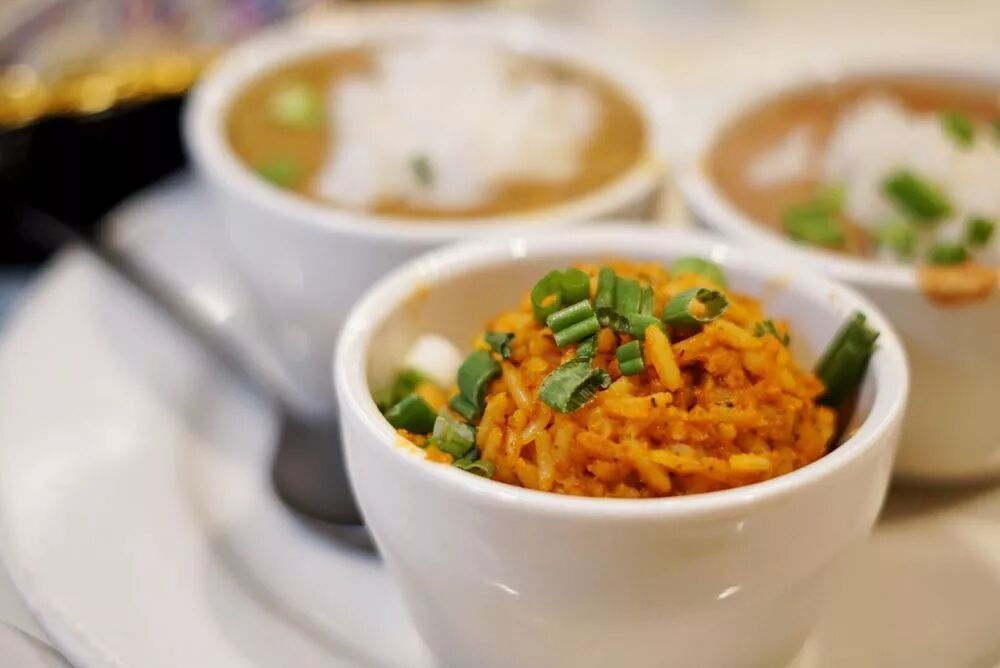
（今天本来想写一篇读者问答的，结果发现微信的会话记录过了5天就会自动删除，找不回来了。给我发过问题的读者要是看到了，能不能麻烦再发一遍哎？）
新奥尔良的烤鸡翅闻名全国，不过在真正的美国的新奥尔良，并没有烤鸡翅这种特色美食。
事实上，肯德基的这种新奥尔良的烤鸡翅的做法，倒是有点类似美国的Wing Stop家的Honey BBQ口味的鸡翅。Wing Stop的总部开在德州北面的达拉斯，所以取名叫达拉斯烤鸡翅可能更加恰当一点。
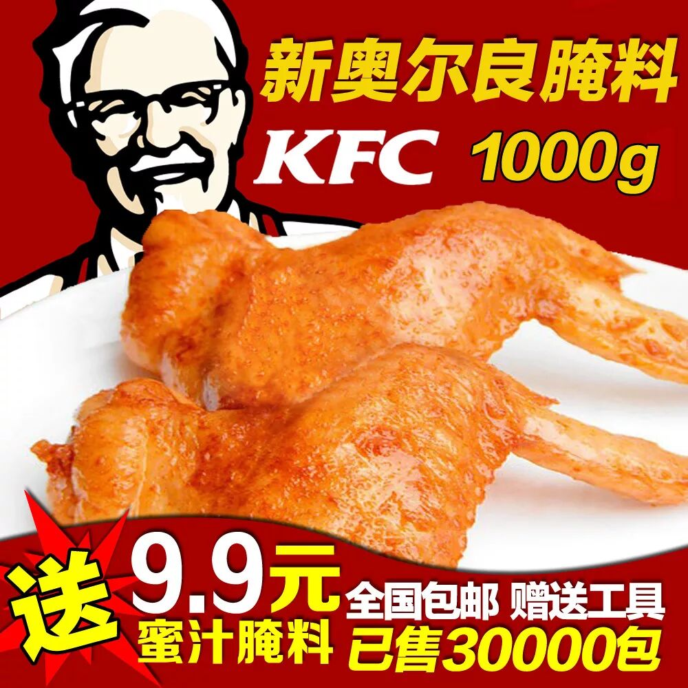
不过当初叫新奥尔良烤翅也并不是毫无道理，毕竟论起全美的本地特色美食，新奥尔良可能真的可以排第一。这篇文章就贴一些图片安利一下那边的美食，如果晚上没吃饱的肚子饿的，现在可以赶紧退出了。
碳烤生蚝
个人觉得最好吃的可能就是这个东西了。
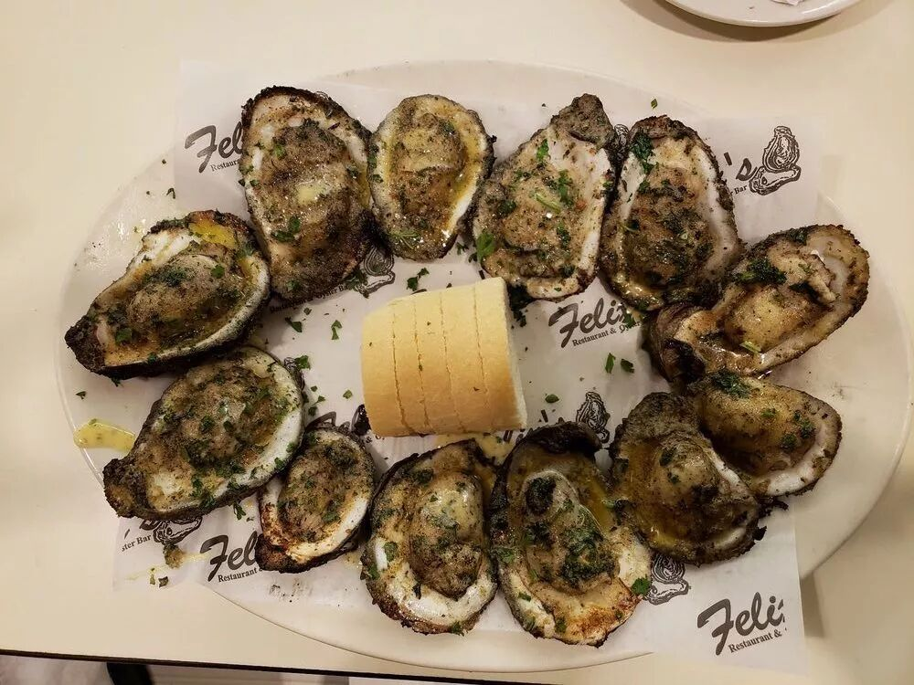
我个人是不吃生蚝的。黏糊糊的一团软体动物吃在嘴里，感觉有点恶心。一般的烤生蚝我也不太爱吃。
不过炭烤生蚝就不一样了，或者说只有新奥尔良的这家碳烤生蚝是例外。
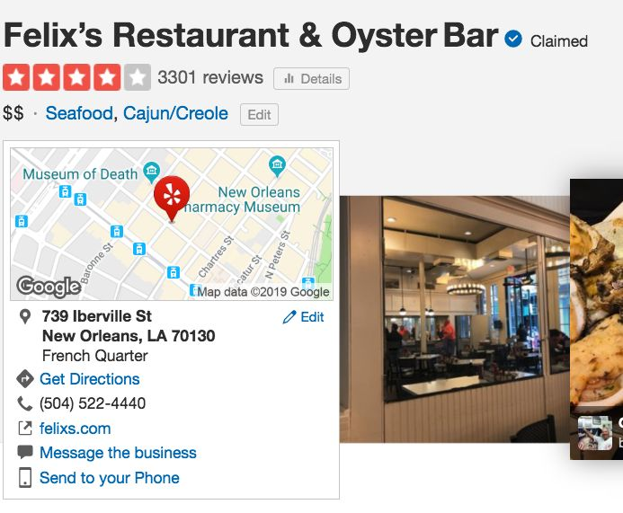
好吃在哪儿呢？好吃在他把所有调味料都做到烤好的生蚝里面了，香料味，柠檬的酸味，加上炭烤的香味，都融入了生蚝的内部融为一体。
吃完里面的生蚝，剩下的汁水还是可以用外面烤的脆脆的，里面香而松软的面包沾着吃。一会儿就是一条面包，一会儿就是一条。。。
我另外吃过两家新奥尔良的炭烤生蚝，都没有做到把这些味道做到烤生蚝里面，所以都不太好吃，只有这家最好吃，强烈推荐。顺便说一下，这家对面的碳烤生蚝比这家更加有名，但是是专门坑游客的。
烤的场景也满壮观的，整个生蚝都在燃烧。
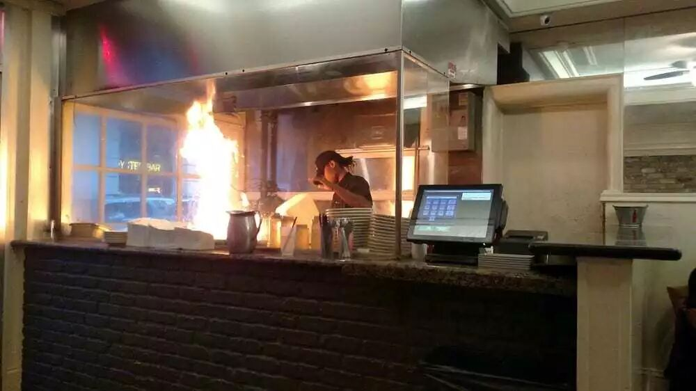
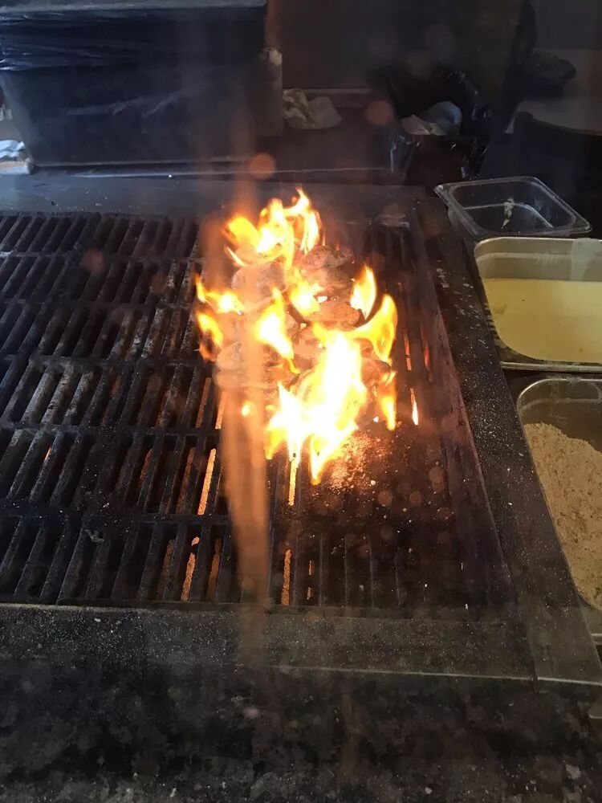
燃烧的生蚝
Etouffee
这是一种由小龙虾肉、面粉、猪油、洋葱、大蒜、芹菜、番茄酱、咖啡喱粉和辣椒等成分在一起所炖成的稠糊糊的炖海鲜，通常浇在米饭上吃。
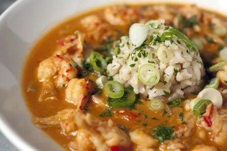
Gumbo
这是一种由小龙虾肉，蟹肉，虾肉，牡蛎等海鲜，加上秋葵，葱，烟熏肠等煮出来的浓汤，通常也会浇在米饭上吃。
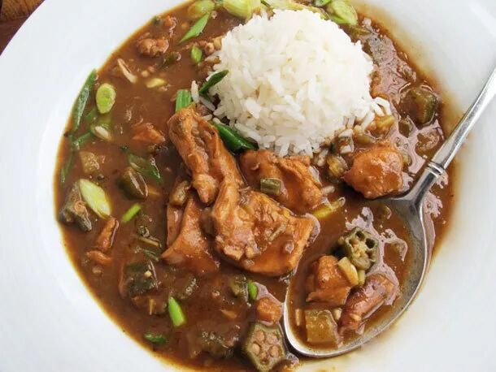
Jambalaya
这是一种类似西班牙海鲜饭的那种没有炒干的炒饭。一般会放海鲜，洋葱，芹菜，Cajun调味料，孜然，番茄，培根等等。虽说看上去跟西班牙海鲜饭有点像，吃起来真的不太一样。
一般餐厅里面，会把这三道菜放在一起，各上一个小Sample，类似于这样。
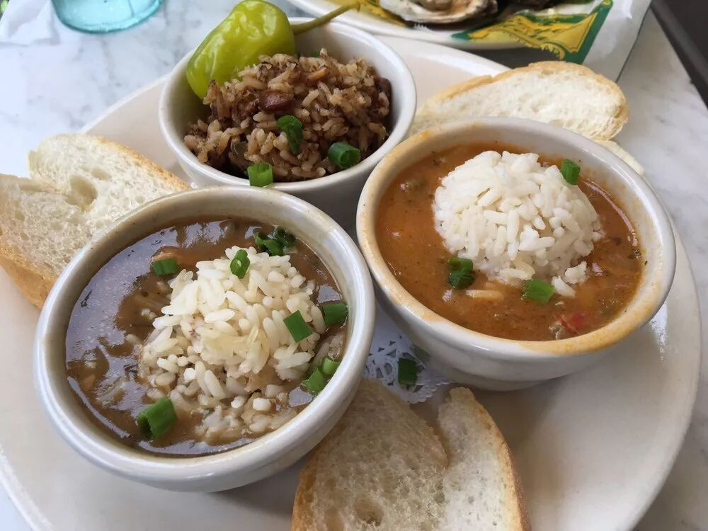
不同店的Jambalaya颜色也不一样，Gumbo是更加偏棕的那个，偏咸一点，Etouffee的番茄味更重
Muffuletta
这是一种路易斯安那州（新奥尔良所在的州）的特色三明治，贼咸。
最顶上一层夹的是酸辣的腌菜，中间夹的是cheese，然后下面是方腿肉，培根，方腿肉。酸泡菜稍微可以减轻一点地下肉的咸味，不过还是没法多吃。
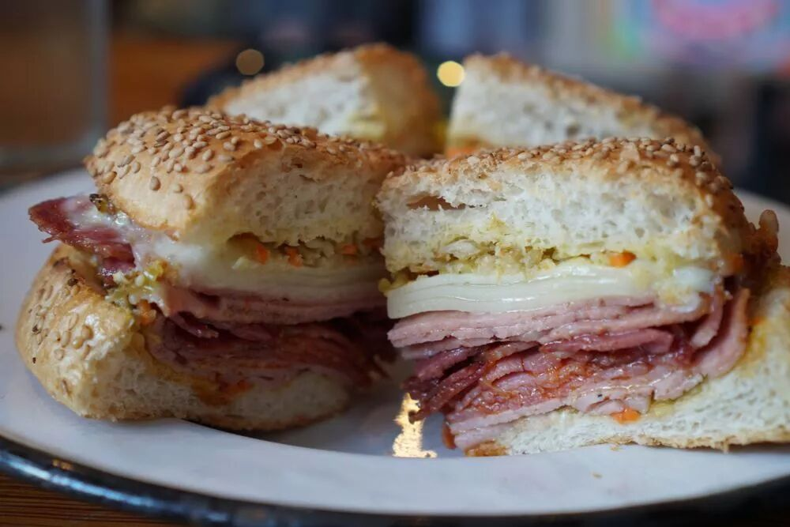
最后安利一家新奥尔良的餐厅。虽说里面不是当地的传统美食，但是蛮好吃的，强烈推荐。
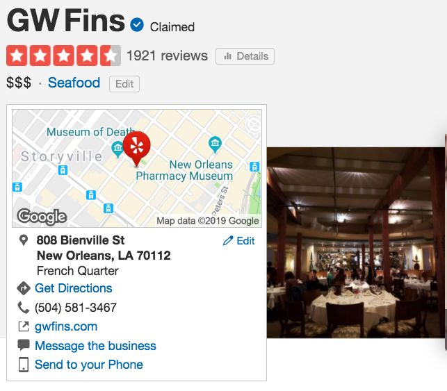
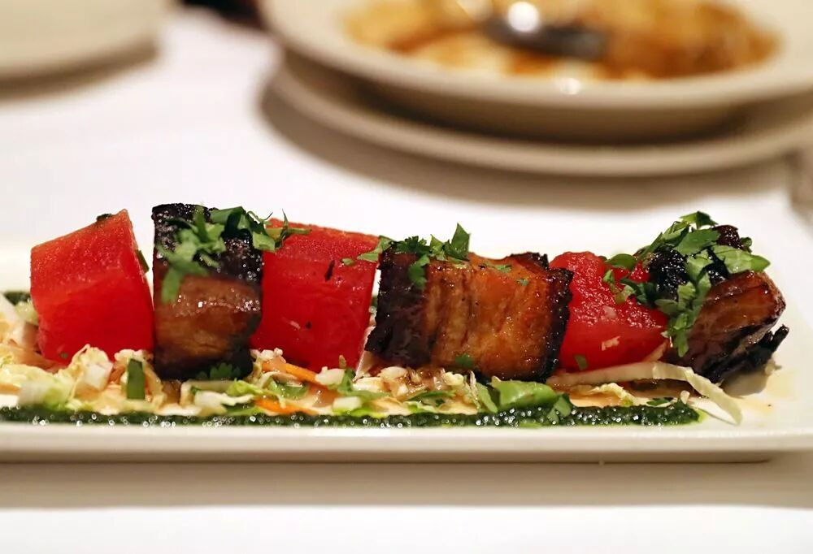
红色的是压紧了的西瓜！配上肥肉很少有点类似红烧肉的炭烤猪肉，完美融合
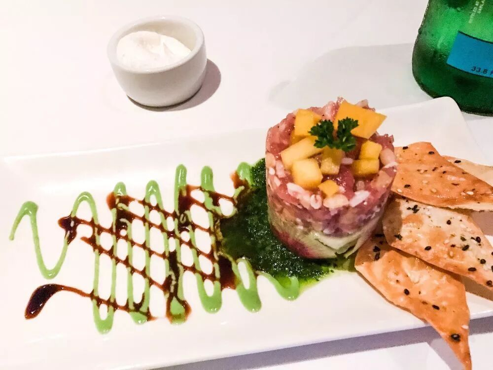
三文鱼丁配合上有点酸酸的鱼子配上清爽的芒果，所有这些夹在脆饼里，一个有高级感的Taco！
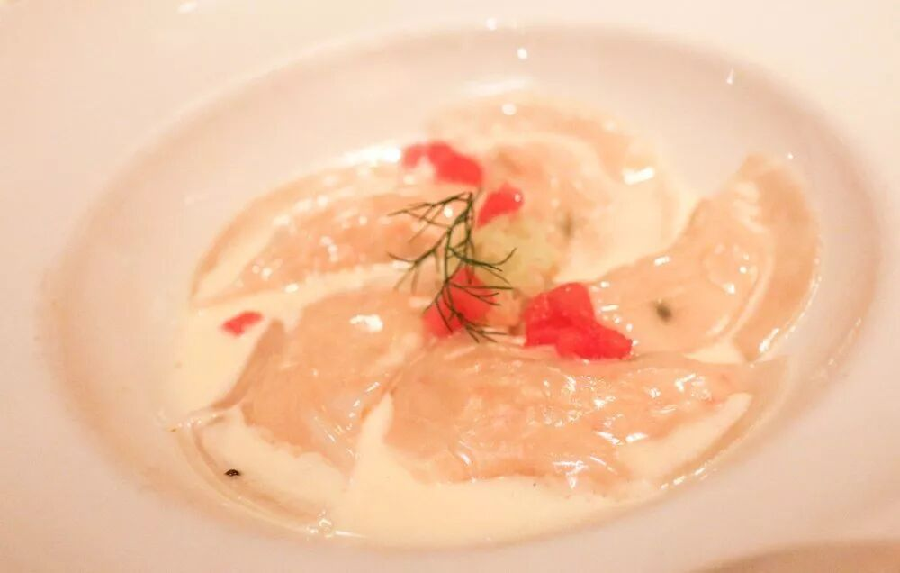
龙虾肉水饺= =
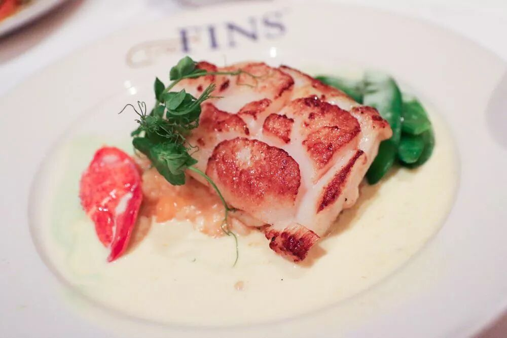
大比目鱼加上鲜贝肉，底下盘子上的酱很解腻
文：高小猫 / 微信号：gaoxiaomao88
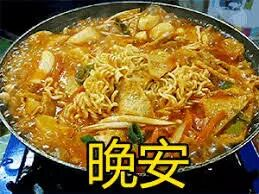